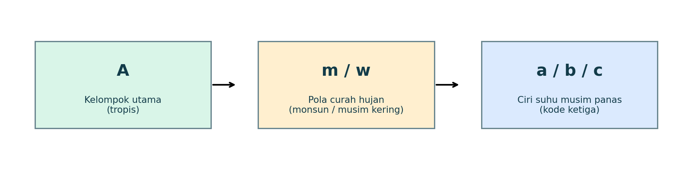
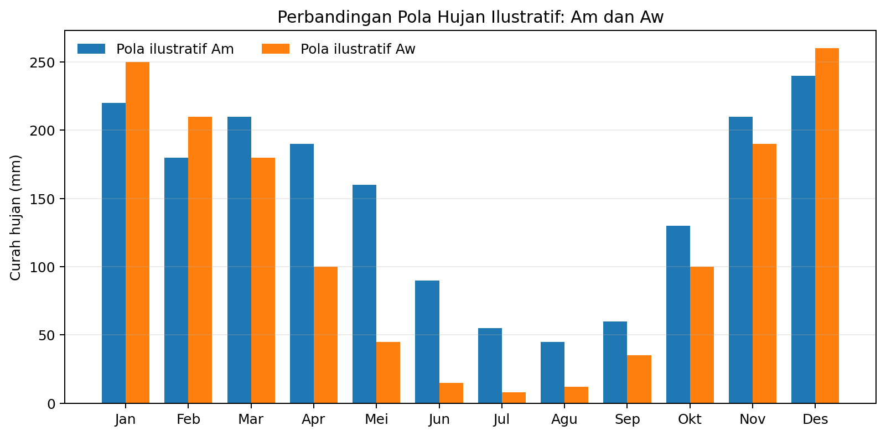
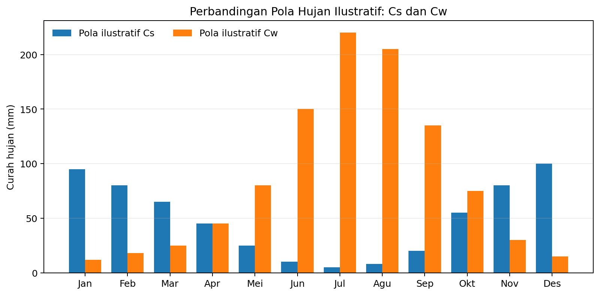

Kelas X SMA • Fase E

| Gagasan utama Tipe iklim yang tampak mirip dapat dibedakan dengan membaca data suhu dan curah hujan bulanan secara cermat. Pada modul ini, kita berlatih membandingkan Am dengan Aw serta Cs dengan Cw. |
|---|
Setelah mempelajari modul ini, peserta didik diharapkan mampu:
Menjelaskan arti huruf pada kode iklim Köppen yang dibahas dalam modul.
Membedakan Am dan Aw menggunakan suhu, curah hujan bulan terkering, dan ambang curah hujan tahunan.
Membedakan Cs dan Cw berdasarkan waktu terjadinya musim kering dan perbandingan curah hujan antarmusim.
Menganalisis contoh data iklim dan menyampaikan alasan klasifikasi secara logis.
Nama tipe iklim dapat terlihat hampir sama karena berada dalam kelompok utama yang sama. Namun, huruf kedua menunjukkan perbedaan pola curah hujan. Kesalahan membaca huruf atau hanya melihat jumlah hujan tahunan dapat menghasilkan klasifikasi yang keliru. Karena itu, gunakan data bulanan dan periksa kriteria secara berurutan.
Gambar 1. Skema sederhana cara membaca kode Köppen. Tidak semua kode memiliki susunan huruf ketiga yang sama; gambar ini merupakan pengantar konsep.
Kelompok A adalah iklim tropis. Dalam sistem Köppen-Geiger yang digunakan sebagai acuan modul ini, suhu rata-rata bulan terdingin pada kelompok A sekurang-kurangnya 18°C. Setelah memastikan kelompok suhu, periksa curah hujan bulan terkering dan curah hujan tahunan.
| Tipe | Makna umum | Kriteria pembeda utama | Petunjuk membaca data |
|---|---|---|---|
| Af | Hutan hujan tropis | Curah hujan bulan terkering ≥ 60 mm. | Tidak ada bulan dengan curah hujan rata-rata di bawah 60 mm. |
| Am | Tropis monsun | Bulan terkering < 60 mm, tetapi ≥ ambang 100 − (P tahunan / 25). | Ada bulan relatif kering, tetapi nilainya masih mencapai ambang yang dihitung. |
| Aw | Tropis sabana | Bulan terkering < ambang 100 − (P tahunan / 25), dan bukan Af. | Musim kering lebih tegas; bulan terkering berada di bawah ambang. |
| Rumus Köppen-Geiger untuk membedakan Am dan Aw P ambang = 100 − (P tahunan / 25) P ambang dan P tahunan dinyatakan dalam milimeter (mm). |
|---|
P tahunan adalah jumlah curah hujan selama satu tahun. Nilai ambang ini dipakai bersama kriteria suhu kelompok A dan curah hujan bulan terkering; jangan gunakan rumus ini tanpa memeriksa apakah wilayah memenuhi kelompok tropis.
| Langkah | Perhitungan / data | Makna |
|---|---|---|
| 1. Curah hujan tahunan | 2.000 mm | Jumlah curah hujan dari Januari sampai Desember. |
| 2. Hitung ambang | 100 − (2.000 / 25) = 100 − 80 = 20 mm | Ambang untuk membandingkan bulan terkering. |
| 3. Kasus A | Bulan terkering = 30 mm | 30 < 60 mm dan 30 ≥ 20 mm; mendukung tipe Am jika syarat suhu A terpenuhi. |
| 4. Kasus B | Bulan terkering = 10 mm | 10 < 20 mm; mendukung tipe Aw jika syarat suhu A terpenuhi. |
| Perlu diingat Contoh angka di atas adalah data latihan, bukan hasil pengamatan dari stasiun cuaca tertentu. Klasifikasi lengkap sebaiknya menggunakan data suhu dan curah hujan jangka panjang. |
|---|

Gambar 2. Pola curah hujan bulanan ilustratif untuk Am dan Aw. Angka grafik dibuat untuk pembelajaran, bukan data observasi.
Am: masih dapat memiliki beberapa bulan relatif kering, tetapi curah hujan bulan terkering tidak jatuh di bawah ambang yang dihitung.
Aw: musim kering lebih tegas; curah hujan bulan terkering berada di bawah ambang.
Jangan hanya melihat satu batang grafik. Periksa jumlah hujan tahunan, bulan terkering, dan syarat suhu kelompok A.
Kelompok C adalah iklim sedang dalam klasifikasi Köppen-Geiger. Pada pembahasan ini, fokusnya adalah huruf kedua: s menunjukkan musim panas kering, sedangkan w menunjukkan musim dingin kering. Untuk menerapkan kriteria, penentuan musim panas dan musim dingin perlu mempertimbangkan belahan bumi tempat wilayah berada.
| Tipe | Pola musim | Kriteria curah hujan utama | Cara mengenali |
|---|---|---|---|
| Cs | Musim panas kering | Curah hujan bulan terkering pada musim panas < 40 mm dan kurang dari sepertiga curah hujan bulan terbasah pada musim dingin. | Curah hujan rendah pada musim panas, lalu meningkat pada musim dingin. |
| Cw | Musim dingin kering | Curah hujan bulan terkering pada musim dingin < sepersepuluh curah hujan bulan terbasah pada musim panas. | Musim dingin relatif kering, sedangkan hujan meningkat pada musim panas. |

Gambar 3. Pola curah hujan ilustratif Cs dan Cw. Bulan-bulan yang mewakili musim panas/dingin bergantung pada belahan bumi; grafik ini hanya skema pola.
Misalnya, pada suatu wilayah di belahan bumi utara, bulan terkering pada musim panas mencatat 20 mm dan bulan terbasah pada musim dingin 90 mm. Sepertiga dari 90 mm adalah 30 mm. Karena 20 mm < 40 mm dan 20 mm < 30 mm, pola curah hujan tersebut memenuhi kriteria presipitasi Cs. Syarat suhu kelompok C tetap harus diperiksa.
Misalnya, bulan terkering pada musim dingin mencatat 12 mm dan bulan terbasah pada musim panas 180 mm. Sepersepuluh dari 180 mm adalah 18 mm. Karena 12 mm < 18 mm, pola tersebut memenuhi kriteria presipitasi Cw. Syarat suhu kelompok C tetap harus diperiksa.
| Catatan penting untuk analisis Pada kondisi tertentu, suatu lokasi dapat memenuhi kriteria presipitasi Cs dan Cw sekaligus. Peel, Finlayson, dan McMahon (2007) membahas kasus seperti ini; penentuan akhir perlu mempertimbangkan distribusi hujan musim panas dan musim dingin serta aturan klasifikasi yang digunakan. |
|---|
| Pertanyaan analisis | Am | Aw | Cs | Cw |
|---|---|---|---|---|
| Kelompok utama | A — tropis | A — tropis | C — sedang | C — sedang |
| Fokus pembeda | Bulan terkering vs ambang | Bulan terkering vs ambang | Musim panas kering | Musim dingin kering |
| Pola hujan | Monsun; ada bulan kering tetapi masih di atas/tepat ambang | Musim kering lebih kuat | Musim panas jauh lebih kering | Musim dingin jauh lebih kering |
| Data kunci | P tahunan dan bulan terkering | P tahunan dan bulan terkering | Bulan terkering musim panas dan terbasah musim dingin | Bulan terkering musim dingin dan terbasah musim panas |
Periksa suhu rata-rata bulanan untuk memastikan kelompok iklim utama.
Susun atau baca data curah hujan dari Januari sampai Desember.
Tandai bulan terkering dan bulan terbasah.
Tentukan musim panas dan musim dingin sesuai belahan bumi.
Untuk Am/Aw, hitung ambang dari curah hujan tahunan lalu bandingkan dengan bulan terkering.
Untuk Cs/Cw, bandingkan hujan pada bulan-bulan kering dan basah sesuai kriteria masing-masing.
Tuliskan kesimpulan disertai angka dan alasan, bukan hanya nama tipe iklim.
Gunakan kriteria yang telah dipelajari. Data berikut bersifat hipotetis untuk latihan.
Sebuah wilayah tropis memiliki curah hujan tahunan 1.500 mm. Curah hujan bulan terkering 25 mm. Hitung ambang dan tentukan apakah data curah hujan mendukung Am atau Aw.
Ruang jawaban: ______________________________________________________________
Wilayah tropis lain memiliki curah hujan tahunan 2.500 mm dan curah hujan bulan terkering 5 mm. Hitung ambang, lalu tentukan tipe yang didukung data curah hujannya.
Ruang jawaban: ______________________________________________________________
Pada wilayah beriklim C di belahan bumi utara, bulan terkering musim panas memiliki hujan 18 mm. Bulan terbasah musim dingin memiliki hujan 75 mm. Apakah pola tersebut memenuhi kriteria curah hujan Cs? Tunjukkan perhitungannya.
Ruang jawaban: ______________________________________________________________
Pada wilayah beriklim C, bulan terkering musim dingin memiliki hujan 14 mm, sedangkan bulan terbasah musim panas 200 mm. Apakah pola tersebut memenuhi kriteria curah hujan Cw? Jelaskan.
Ruang jawaban: ______________________________________________________________
Grafik curah hujan suatu wilayah menunjukkan hujan paling rendah pada musim panas dan meningkat pada musim dingin. Kode pola curah hujan kelompok C yang paling mungkin adalah apa? Sebutkan data tambahan yang masih perlu diperiksa.
Ruang jawaban: ______________________________________________________________
1. Pada kelompok A, nilai suhu rata-rata bulan terdingin yang menjadi syarat dasar adalah ...
A. ≥ 18°C
B. < 18°C
C. ≥ 10°C
D. < 0°C
2. Curah hujan tahunan 2.000 mm menghasilkan ambang Am/Aw sebesar ...
A. 10 mm
B. 20 mm
C. 40 mm
D. 80 mm
3. Jika ambang suatu wilayah tropis adalah 20 mm dan bulan terkering 10 mm, data curah hujan mendukung ...
A. Af
B. Am
C. Aw
D. Cs
4. Huruf s pada Cs menunjukkan ...
A. Musim dingin kering
B. Musim panas kering
C. Hujan sepanjang tahun
D. Suhu musim dingin sangat rendah
5. Untuk kriteria Cs, bulan terkering musim panas harus ...
A. < 40 mm dan < sepertiga bulan terbasah musim dingin
B. < 60 mm tanpa perbandingan musim
C. < sepersepuluh bulan terbasah musim panas
D. ≥ 60 mm
6. Untuk kriteria Cw, perbandingan yang diperiksa adalah ...
A. Bulan terkering musim panas terhadap hujan tahunan
B. Bulan terbasah musim dingin terhadap suhu tahunan
C. Bulan terkering musim dingin terhadap sepersepuluh bulan terbasah musim panas
D. Suhu bulan terdingin terhadap curah hujan tahunan
7. Grafik menunjukkan musim dingin kering dan musim panas basah pada wilayah kelompok C. Tipe yang paling sesuai adalah ...
A. Cs
B. Cw
C. Am
D. Af
8. Mengapa data suhu tetap perlu diperiksa walaupun pola hujan cocok dengan Cs?
A. Karena kode Cs juga harus memenuhi syarat kelompok C
B. Karena curah hujan tidak digunakan dalam Köppen
C. Karena semua wilayah Cs bersuhu di bawah 0°C
D. Karena data bulanan tidak relevan
Soal 1: Ambang = 100 − (1.500/25) = 100 − 60 = 40 mm. Bulan terkering 25 mm < 40 mm dan < 60 mm, sehingga data mendukung Aw jika syarat suhu kelompok A terpenuhi.
Soal 2: Ambang = 100 − (2.500/25) = 100 − 100 = 0 mm. Bulan terkering 5 mm berada di bawah 60 mm dan sama dengan atau lebih besar daripada ambang 0 mm, sehingga data curah hujan mendukung Am jika syarat suhu kelompok A terpenuhi.
Soal 3: Sepertiga dari 75 mm = 25 mm. Bulan terkering musim panas 18 mm < 40 mm dan 18 mm < 25 mm, sehingga memenuhi kriteria curah hujan Cs.
Soal 4: Sepersepuluh dari 200 mm = 20 mm. Bulan terkering musim dingin 14 mm < 20 mm, sehingga memenuhi kriteria curah hujan Cw.
Soal 5: Pola yang paling mungkin adalah Cs. Tetap periksa data suhu untuk memastikan kelompok C serta hitung perbandingan hujan sesuai kriteria.
1. A — Kelompok A memiliki suhu rata-rata bulan terdingin ≥ 18°C.
2. B — 100 − (2.000/25) = 100 − 80 = 20 mm.
3. C — 10 mm lebih kecil dari ambang 20 mm, sehingga data curah hujan mendukung Aw apabila syarat suhu kelompok A terpenuhi.
4. B — Huruf s menunjukkan musim panas kering.
5. A — Kriteria Cs memakai batas bulan terkering musim panas < 40 mm dan kurang dari sepertiga bulan terbasah musim dingin.
6. C — Kriteria Cw membandingkan bulan terkering musim dingin dengan sepersepuluh bulan terbasah musim panas.
7. B — Pola musim dingin kering dan musim panas basah menunjukkan Cw.
8. A — Kriteria pola hujan saja tidak cukup; syarat suhu kelompok utama juga harus sesuai.
| Istilah | Arti |
|---|---|
| Curah hujan bulanan | Jumlah atau rata-rata curah hujan pada suatu bulan, biasanya dalam mm. |
| Curah hujan tahunan | Jumlah curah hujan selama dua belas bulan dalam satu tahun. |
| Bulan terkering | Bulan dengan curah hujan paling rendah dalam periode yang dianalisis. |
| Bulan terbasah | Bulan dengan curah hujan paling tinggi dalam periode yang dianalisis. |
| Ambang curah hujan | Nilai pembanding untuk membantu menentukan tipe iklim berdasarkan kriteria tertentu. |
| Köppen-Geiger | Sistem klasifikasi iklim yang menggunakan data suhu dan curah hujan. |
Peel, M. C., Finlayson, B. L., & McMahon, T. A. (2007). Updated world map of the Köppen-Geiger climate classification. Hydrology and Earth System Sciences, 11, 1633–1644. https://doi.org/10.5194/hess-11-1633-2007
Chen, D., et al. (2021). Assessment of climate change in Central Asia from 1980 to 2100 using the Köppen-Geiger climate classification. Atmosphere, 12(1), 123. https://doi.org/10.3390/atmos12010123
Catatan penggunaan sumber: kriteria angka dalam modul merujuk pada definisi Köppen-Geiger yang dipublikasikan dalam literatur ilmiah. Grafik dan angka pada contoh latihan bersifat ilustratif, bukan data observasi. Untuk penelitian wilayah tertentu, gunakan data suhu dan curah hujan jangka panjang yang dapat ditelusuri sumbernya.